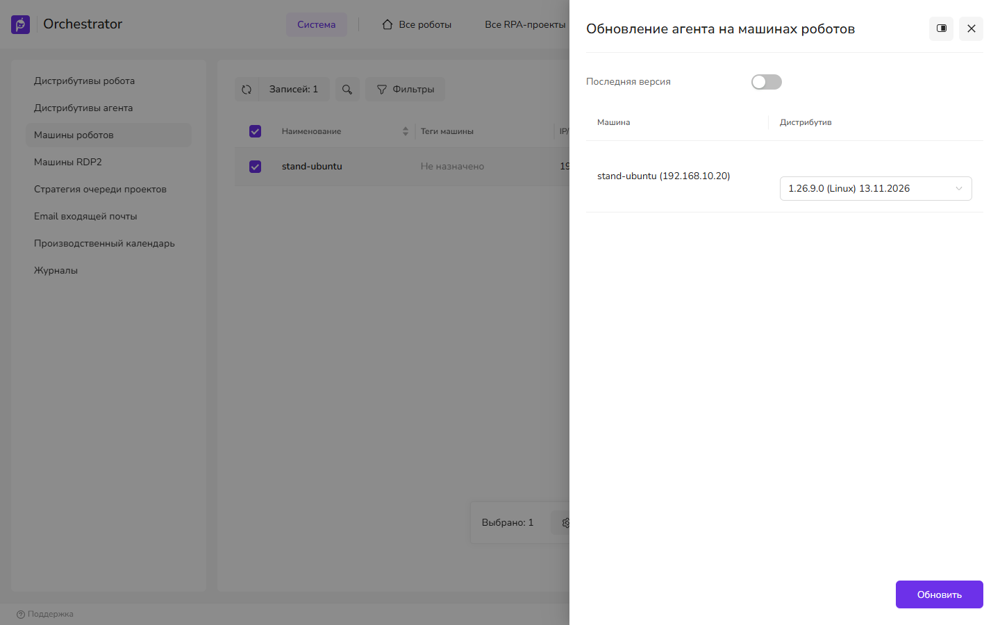
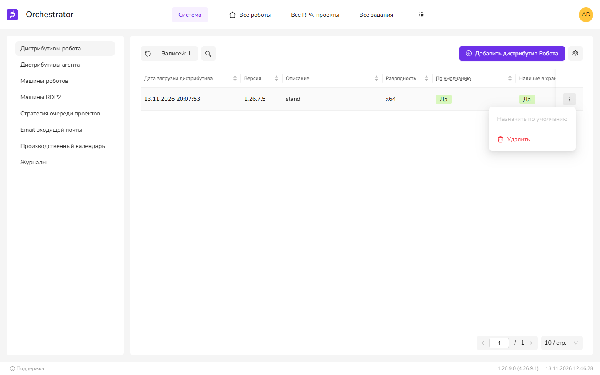

Порядок обновления: Windows, Linux, Docker
На странице описаны очерёдность обновления и её причины, затем пошаговые инструкции: серверные службы на Windows, Linux и в Docker, агенты из UI4, роботы.
Общий порядок
В таблице — только то, что подтверждено кодом. Остальное отмечено в блоке «уточнить» ниже.
| Шаг | Причина | Где в коде |
|---|---|---|
| 1. Лицензия и резервные копии | Миграции БД при старте необратимы; бессрочная лицензия Оркестратора может не подойти к новой версии. | WebApi/Startup.cs (UpdateDatabase), Bl/Licensing/LicenseService.cs |
| 2. Серверные службы | WebApi при старте применяет миграции четырёх своих БД, остальные службы — своих. В compose WebApi запускается после готовности PostgreSQL, RabbitMQ и MachineInfo, остальные службы — после готовности WebApi. | WebApi/Startup.cs; docker/ubuntu/docker-compose.yml.template (depends_on) |
| 3. Агенты | Утилиту обновления агента (AgentUpdater) агент скачивает с WebApi, а WebApi отдаёт файл из своего каталога. Утилита входит в архив WebApi, поэтому новая версия появится только после обновления сервера. | WebApi/Controllers/AgentDistrsController.cs (Updater/{windows}/download); azure/build.ps1 |
| 4. Роботы | Дистрибутив робота загружается на обновлённый сервер и разворачивается агентом. | RobotDistrsController.cs |
| 5. Студии | Обновляются по отдельному графику. StudioVersionChecker:MinimumStudioVersion только ограничивает минимальную версию Студии — это настройка, а не гарантия совместимости. | WebApi/Options/StudioVersionChecker.cs |
Порядок запуска серверных служб
- СУБД и RabbitMQ.
- MachineInfo — если задан
License:MachineInfoUrl, без неё WebApi считает лицензии невалидными. - WebApi. Дождитесь, пока
/healthответитHealthy: до этого выполняются миграции. - RobotLogs, Analytic, Notifications, States, LogEventsWebhook, Queues, Licenses.
- UI (nginx). NuGet2 зависит только от СУБД.
Так порядок задан в поставочном compose; на Windows и Linux соблюдайте его вручную.
Если установлен последний патч LTS (1.26.7.x или 1.25.7.x), сначала прочитайте предупреждение о миграциях в разделе «Совместимость» на странице Перед обновлением.
Что в поставке
| Платформа | Архив службы | Конфиг |
|---|---|---|
| Windows | primo-rpa-orchestrator-<служба>-<версия>-windows.zip, например primo-rpa-orchestrator-webapi-1.26.9.0-windows.zip | appsettings.ProdWin.json |
| Linux | primo-rpa-orchestrator-<служба>-<версия>-linux.zip, внутри юниты *.user.service (без root) и *.service (от root) | appsettings.ProdLinux.json |
| Docker | образы <служба>:<версия>-ubuntu и шаблон docker-compose.yml | переменные окружения в compose |
Службы собраны self-contained: установка .NET на сервер не требуется. В архивы WebApi вложены AgentUpdater.zip и AgentUpdater-linux.zip — не удаляйте их.
Общее правило для всех платформ: не копируйте старый конфиг поверх нового. Переносите в новый файл свои значения и сверяйтесь с изменениями в конфигах между LTS.
Windows
- Остановите службы Оркестратора:
Get-Service "Primo.Orchestrator.*" | Stop-ServiceGet-Service "Primo.Orchestrator.*"— всеStopped - Переименуйте каталог каждой службы, например
C:\Primo\WebApi→C:\Primo\WebApi-old. старые файлы сохранены рядом - Распакуйте новые архивы в прежние пути. в каталоге службы есть
Version.txtс новой версией - Перенесите свои значения из
*-old\appsettings.ProdWin.jsonв новый файл. в новом конфиге заданы используемые подключения к БД, RabbitMQ, адреса и пароли - Запустите MachineInfo, затем WebApi:
Start-Service "Primo.Orchestrator.MachineInfo" Start-Service "Primo.Orchestrator.WebApi"http://localhost:5001/healthотвечаетHealthy, в журнале WebApi нет ошибок миграций - Запустите остальные службы, затем nginx. UI4 открывается, вход работает
Переменная ASPNETCORE_ENVIRONMENT=ProdWin задаётся на уровне машины при установке и обновлением не меняется. Без неё WebApi не стартует: «Environment variable 'ASPNETCORE_ENVIRONMENT' not set. Aborting.»
Linux: службы без root
Целевая схема: службы работают под orch-user через пользовательские юниты в ~/.config/systemd/user/, как на страницах установки. Все команды — под orch-user, без sudo.
- Откройте оболочку пользователя служб:
sudo su - orch-user export XDG_RUNTIME_DIR=/run/user/$(id -u)systemctl --user statusотвечает без ошибки подключения к шине - Остановите службы:
for s in Nginx LogEventsWebhook Licenses Queues States Notifications Analytic RobotLogs NuGet WebApi MachineInfo; do systemctl --user stop Primo.Orchestrator.$s donesystemctl --user list-units 'Primo.Orchestrator.*'— нетactive - Скопируйте архивы новой версии в отдельный каталог, например
~/dist-new. В каталоге с архивами прежней версии шаблон имени из команд ниже совпадёт с двумя файлами. - Сохраните старые каталоги и распакуйте новые:
в каждом каталоге естьcd ~/dist-new for s in MachineInfo WebApi RobotLogs Analytic Notifications States Queues Licenses LogEventsWebhook; do mv /opt/Primo/$s /opt/Primo/$s-old unzip -q primo-rpa-orchestrator-"${s,,}"-*-linux.zip -d /opt/Primo/$s chmod +x /opt/Primo/$s/Primo.Orchestrator.$s done mv /opt/Primo/NuGet2 /opt/Primo/NuGet2-old unzip -q primo-rpa-orchestrator-nuget2-*-linux.zip -d /opt/Primo/NuGet2 chmod +x /opt/Primo/NuGet2/BaGetVersion.txtс новой версией - Перенесите свои значения из
/opt/Primo/<Служба>-old/appsettings.ProdLinux.jsonв новые файлы. Проверьте также секции, которых нет в поставочном файле и которые добавлялись при установке:Orchestratorв файлах States и Analytic,CustomerBindingв файле MachineInfo. новые конфиги содержат перенесённые значения - Сравните установленные юниты с новыми (
diff ~/.config/systemd/user/Primo.Orchestrator.WebApi.service /opt/Primo/WebApi/Primo.Orchestrator.WebApi.user.service). Если юнит изменился, скопируйте новый, верните в него свои строкиEnvironment=(например,PRIMOSALT) и выполнитеsystemctl --user daemon-reload. в юнитах сохранены добавленные переменные - Запустите MachineInfo и WebApi:
ответsystemctl --user start Primo.Orchestrator.MachineInfo systemctl --user start Primo.Orchestrator.WebApi curl http://localhost:5001/healthHealthy;journalctl --user -u Primo.Orchestrator.WebApiбез ошибок миграций - Запустите остальные службы и nginx; при обновлении UI4 замените содержимое
/opt/Primo/nginx/wwwфайлами нового дистрибутива UI (index.htmlв корне). UI4 открывается
Проверено при обновлении с 1.26.7 на 1.26.9: юниты служб в этих версиях не различаются, WebApi применяет миграции и отвечает Healthy менее чем через минуту после запуска, лицензии остаются действительными. RDP2 обновляется так же, как остальные службы.
Альтернатива: службы от root
Те же шаги, но через sudo: sudo systemctl stop|start Primo.Orchestrator.<Служба>, юниты без .user находятся в /etc/systemd/system/, журнал — journalctl -u Primo.Orchestrator.<Служба>. Переход на схему без root — Переход с root на работу без root.
Docker
Данные хранятся в именованных томах, поэтому при пересоздании контейнеров они сохраняются.
- Сделайте копии томов и дампы БД (см. Перед обновлением). копии вне Docker-хоста
- Используйте новый
docker-compose.ymlиз поставки и перенесите в него свои значения: блокиx-globals,x-secrets,primo-machine-key. Ключprimo-machine-keyдолжен остаться прежним, иначе лицензии станут невалидными. у всех служб Оркестратора в теге новая версия, ключ совпадает со старым - Скачайте образы:
docker compose pull(в закрытом контуре — загрузите их из архива).docker imagesпоказывает новые теги - Пересоздайте контейнеры:
docker compose up -d.docker compose ps— все службыhealthy - Удалите старые образы:
docker image prune -a. Команда удаляет все образы, которые не используются контейнерами. место на диске освободилось
Переход с compose 1.25.7: в нём был MinIO, и WebApi с NuGet2 хранили файлы там (FileStore__Type=1, Storage__Type=Minio). С 1.26.7 MinIO в compose нет, файлы хранятся в томах webapidata и nugetdata. Дистрибутивы агента и робота и NuGet-пакеты из MinIO автоматически не переносятся. Либо оставьте MinIO и задайте старые значения явно, либо загрузите файлы заново. Не удаляйте том miniodata до проверки.
Проверено при обновлении с 1.26.7 на 1.26.9: состав служб, томов и параметров в начале compose-файла в этих версиях совпадает; обновление вместе со скачиванием образов занимает около двух минут; лицензии, роботы, проекты и история запусков сохраняются. В compose-файле 1.26.9 образы PostgreSQL и RabbitMQ берутся из реестра Primo RPA, а не с Docker Hub; версия PostgreSQL прежняя, данные в томе остаются.
RDP2 в Docker-поставку не входит. Обновите его отдельно по шагам для Windows или Linux.
Агенты из UI4
Требуется право «Обновление агента» (AgentDistrs.AgentUpdate). Загружаемый дистрибутив должен быть не ниже 1.24.8.0, платформа — совпадать с машиной.
- Настройки → Система → Дистрибутивы агента → «Добавить дистрибутив Агента». Выберите zip агента нужной ОС и нажмите Сохранить. Сообщение «Server error» при сохранении означает, что на сервере нет каталога для дистрибутивов агента — см. раздел 1 Установки служб. дистрибутив в списке, «Наличие в хранилище» подтверждено
- Настройки → Система → Машины роботов. Отметьте машины и нажмите «Обновить выбранные». открылась панель «Обновление агента на машинах роботов»
- Для каждой машины выберите дистрибутив или включите «Последняя версия». Нажмите «Обновить». в колонке «Последнее обновление» — «Обновление запущено» с датой
- Отслеживайте этапы: «Скачивание AgentUpdater», «Скачивание дистрибутива агента», «Остановка сервиса агента», «Обновление сервиса агента», «Запуск сервиса агента». В журнал событий пишутся записи
AgentUpdate OK - …. «Версия агента» — новая

Обновление агента на Linux занимает менее минуты. Сервер и агент соседних версий совместимы в обе стороны: сервер 1.26.9 работает с агентом 1.26.7, сервер 1.26.7 — с агентом 1.26.9. Робот 1.26.7 запускает проекты под сервером и агентом 1.26.9.
На машине выполняется следующее: AgentUpdater останавливает службу агента (Windows — Primo.Orchestrator.Agent, Linux — systemctl --user stop Primo.Orchestrator.Agent), копирует каталог агента без Logs в <Agent:DataPath>/AgentRecovery, распаковывает новый дистрибутив и запускает службу. При ошибке файлы восстанавливаются из копии.
Из старого конфига агента переносятся только эти ключи:
| Секция | Ключи |
|---|---|
Orchestrator | BaseUrl, TenantId |
Agent | DataPath, ProjectZipEncoding |
DeployRobot | RobotsPath |
Kestrel:EndPoints | InternalHttp, ExternalHttps |
Performance | Enabled, DiskName |
Serilog (файловый приёмник) | path, retainedFileCountLimit, rollingInterval |
ConfigPasswordEncryptor | Algorithm |
AgentCommands (только Linux) | At, Reboot, Xvfb, Session |
appsettings.Runner.json (только Linux) | настройки Serilog (файловый приёмник) |
Остальное берётся из нового дистрибутива. Если изменялись SchedulerTaskSettings, Agent:UserName, Agent:GroupName, Agent:DownloadScreenFile или настройки Vault, после обновления перенесите их вручную.
При запуске обновления у всех роботов машины сбрасываются блокировки и трекинги развёртывания и запуска. Обновляйте машины, на которых роботы сейчас не работают.
Роботы
- Настройки → Система → Дистрибутивы робота → «Добавить дистрибутив Робота»; загрузите архивы из поставки. дистрибутивы в списке
- В меню ⋮ в строке нужного дистрибутива выберите Назначить по умолчанию. в колонке По умолчанию у нового дистрибутива — «Да»
- Роботы → Все роботы → «Переразвернуть роботов». статус развёртывания — «Готово»

Откат обновления
Миграции новой версии изменяют базы данных, поэтому при откате базы восстанавливаются из копии, созданной перед обновлением. Порядок для установки службами на Linux:
- Остановите службы.
- Верните каталоги прежней версии: переименуйте
/opt/Primo/<Служба>новой версии и верните на место/opt/Primo/<Служба>-old. Так же верните прежнее содержимое/opt/Primo/nginx/www, если обновлялся интерфейс. - Восстановите базы из копии — см. Порядок копирования и восстановления. Перед созданием пустых баз удалите базы новой версии командой
dropdb. - Запустите MachineInfo, затем WebApi, затем остальные службы.
/healthслужб отвечаетHealthy, в файлеVersion.txtкаталога службы — прежняя версия
Агент, обновлённый до новой версии, после отката сервера продолжает работать, возвращать его к прежней версии не требуется.
Порядок для установки в Docker. Требуется копия, созданная перед обновлением: дамп баз, тома и файлы каталога установки — см. Резервное копирование и восстановление.
- Остановите службы и удалите контейнеры вместе с томами:
docker compose down -v. Команда удаляет данные новой версии. - Верните в каталог установки
docker-compose.ymlиnginx.confпрежней версии из копии. - Восстановите тома и базы и запустите службы по шагам восстановления со страницы резервного копирования. все службы
healthy, в тегах образов — прежняя версия, лицензии действительны